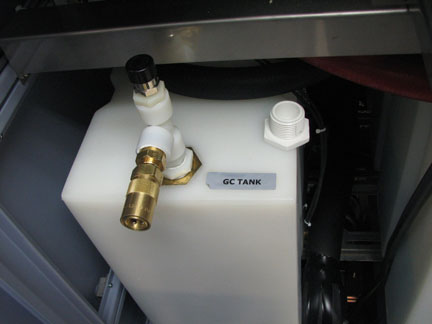

NOTE:
Only turn the DI tank adaptor into the fill port two or three revolutions leaving the QD facing out of the HEC cooling cabinet. Ensure that the vent fitting on the tank adapter is open.
Illustration 3:
DI Tank Adaptor
